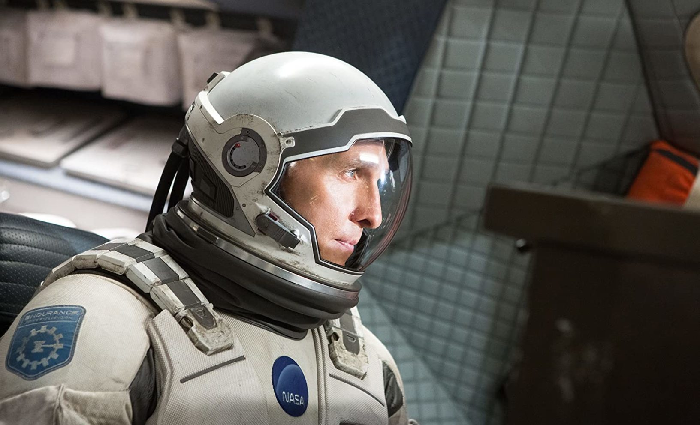
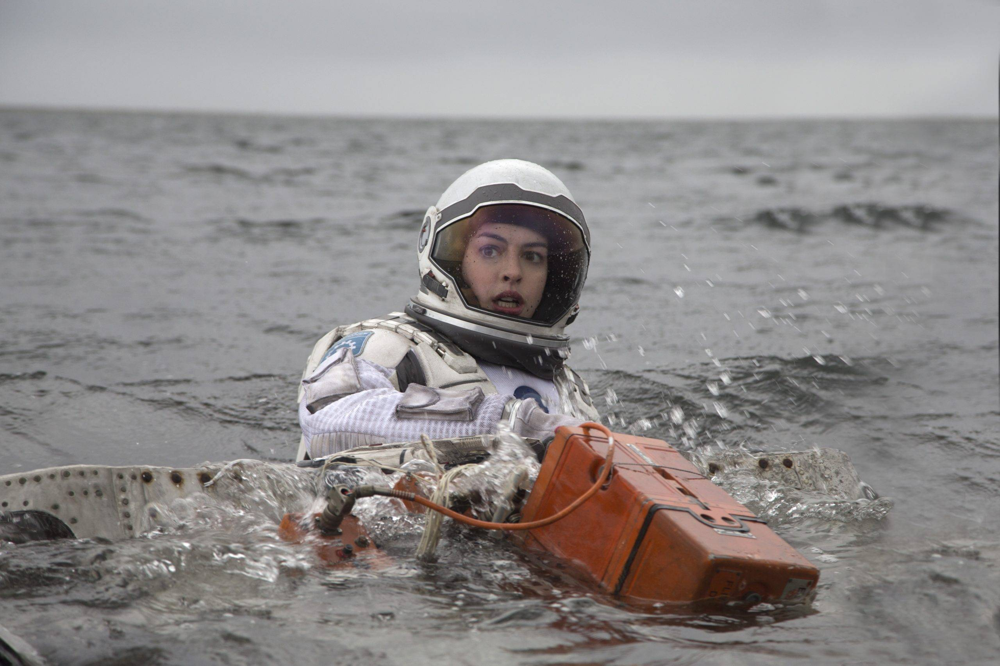
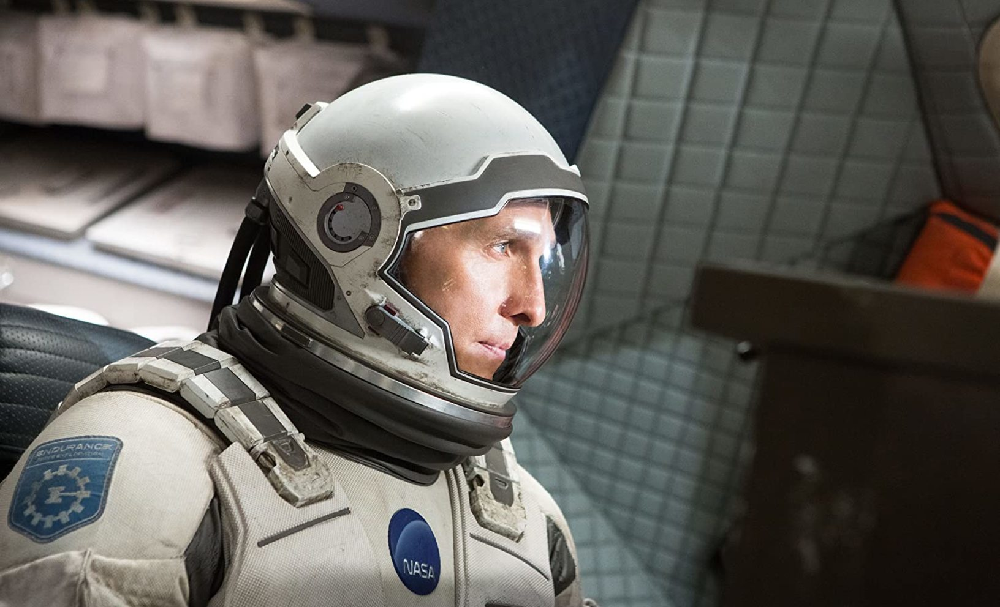
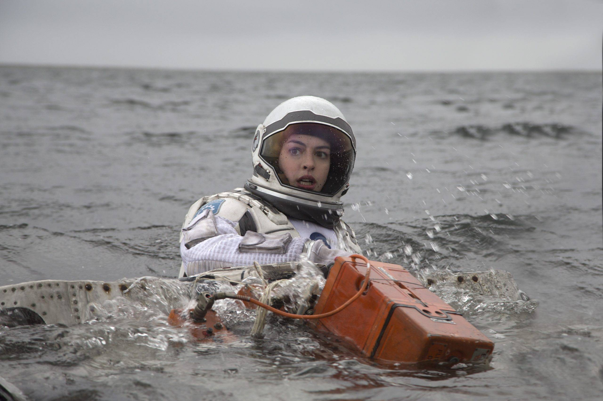
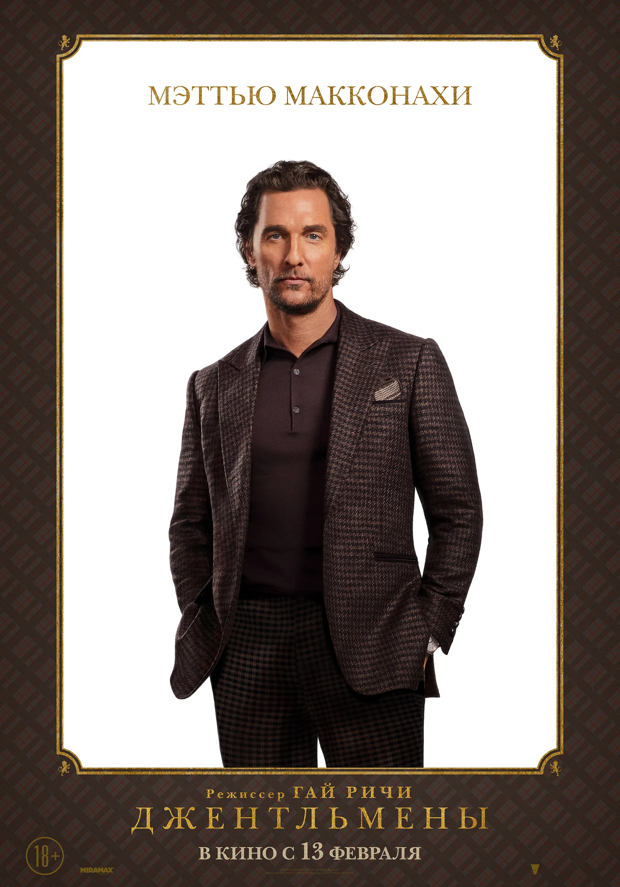
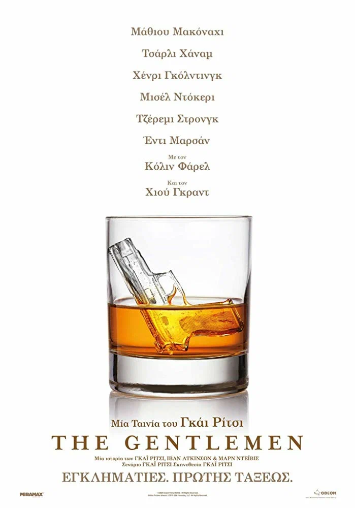
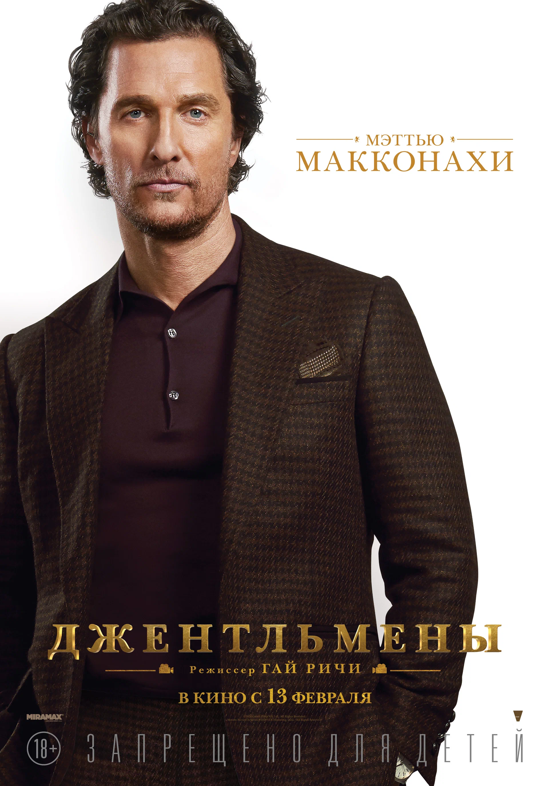
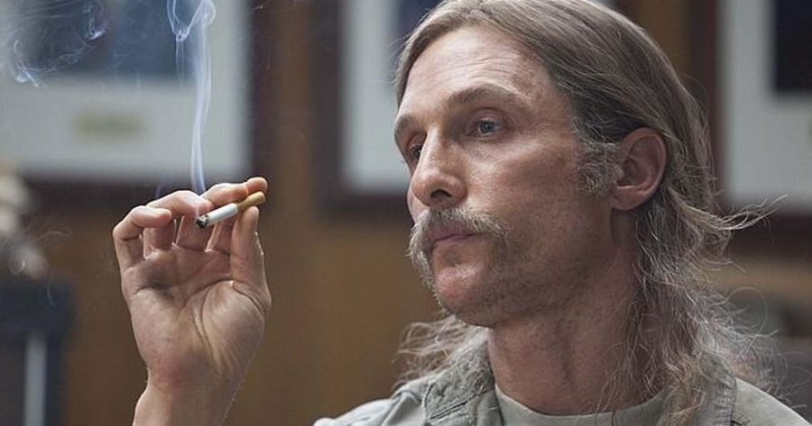
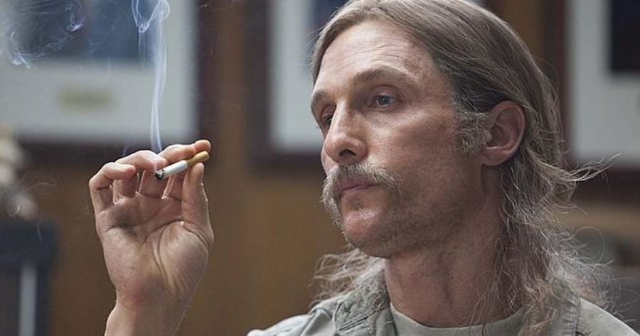

Наше время на Земле подошло к концу, команда исследователей берет на себя самую важную миссию в истории человечества; путешествуя за пределами нашей галактики, чтобы узнать есть ли у человечества будущее среди звезд.
 



| Год премьеры | 2014 |
|---|---|
| Оценка | Заслуженная 8.6 |
| Макконахи? | Божнственнен |
| Рекомендуется к просмотру? | Естественно |
Один ушлый американец ещё со студенческих лет приторговывал наркотиками, а теперь придумал схему нелегального обогащения с использованием поместий обедневшей английской аристократии и очень неплохо на этом разбогател. Другой пронырливый журналист приходит к Рэю, правой руке американца, и предлагает тому купить киносценарий, в котором подробно описаны преступления его босса при участии других представителей лондонского криминального мира — партнёра-еврея, китайской диаспоры, чернокожих спортсменов и даже русского олигарха.
  | Год премьеры | 2019 |
|---|---|
| Оценка | Незаслуженная (8.6) шок |
| Макконахи | Пиздатый |
| Рекомендуется к просмотру? | Определённо |
В Луизиане в 1995 году происходит странное убийство девушки. В 2012 году дело об убийстве 1995 года повторно открывают, так как произошло похожее убийство. Чтобы продвинуться в расследовании, полиция решает допросить бывших детективов, которые работали над тем делом.
 


| Год премьеры | 2014 |
|---|---|
| Оценка | 8.7 |
| Макконахи? | TOP DAWG |
| Рекомендуется к просмотру? | Конечно |